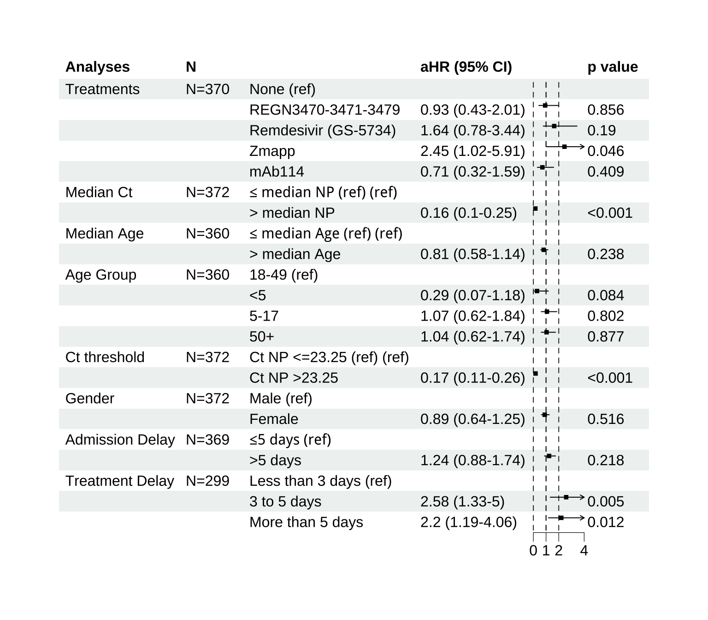

We estimated the probability of survival over time using a Weibull proportional hazards model.
Survival curves were stratified by multiple key variables to assess their association with time-to-event outcomes:
For each stratification, we fitted a separate Weibull model and derived median survival estimates with 95% confidence intervals, along with corresponding sample sizes per stratum.
Survival curves were visualized using ggflexsurvplot, and corresponding tables of median survival times were generated.
A total of 463 patients were included in the initial dataset 1. We first excluded individuals for whom the date of discharge or transfer was missing (n=32), resulting in 431 patients retained for analysis. Next we excluded individuals with unknown outcome and those referred to another facility (n=23), resulting in 408 remaining individuals. For the Analyses by Ct, we removed cases without a recorded Ct value at admission, reducing the dataset to 375 patients.
Figure 1: Dataset Filtering Overview
By experimental treatment
By Ct threshold
By Admission delay
By Treatment delay
By age group
By Sex
To summarize results visually, we produced forest plots showing aHRs with 95% CIs for each covariate. See 2. Reference categories were indicated for categorical variables, and p-values were reported alongside hazard ratios. These forest plots provide an integrated view of survival associations across all stratifications, enabling comparison of treatment effects, viral load (Ct), demographic factors, and admission timing.
Median predicted survival times were also estimated using the fitted Weibull models, and tabulated by strata to complement the forest plot visualizations.
All analyses were performed in R version 4.4.1.
for the ROC curve visualization.

Figure 2: Forest Plots of Weibull Model Estimates for Time-to-Event Outcome